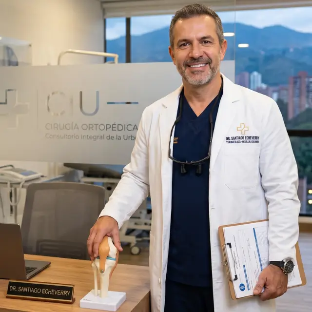
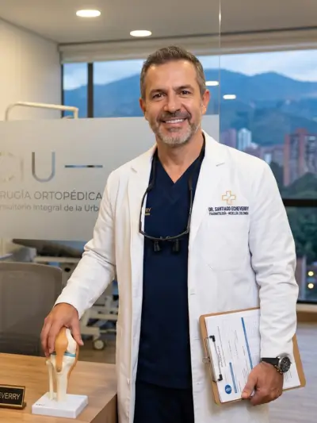

Cirugía de rodilla
Reconstrucción de ligamento cruzado, meniscectomía, artroplastia total y unicompartimental. Técnica artroscópica cuando la indicación lo permite.
Más de [X] años evaluando y operando patología ortopédica en adultos. Diagnóstico preciso. Indicación quirúrgica responsable. Seguimiento postoperatorio completo.

Especialidades
Evaluación, diagnóstico y tratamiento — quirúrgico o conservador — según la indicación clínica de cada caso.
Reconstrucción de ligamento cruzado, meniscectomía, artroplastia total y unicompartimental. Técnica artroscópica cuando la indicación lo permite.
Reemplazo total y parcial de cadera, tratamiento de displasia y necrosis avascular. Seguimiento rehabilitador incluido en el plan postoperatorio.
Manejo agudo de fracturas de miembros superiores e inferiores. Reducción cerrada y abierta con fijación interna según la clasificación de la lesión.
Procedimientos artroscópicos de rodilla, hombro y tobillo. Mínima invasión, recuperación más rápida, menor riesgo infeccioso que la cirugía abierta.
Lesiones del deportista aficionado y profesional. Tendinopatías, esguinces grado III, roturas musculares. Protocolo de retorno al deporte documentado por escrito.
Dolor lumbar crónico, hernia de disco, estenosis de canal y escoliosis. Indicación quirúrgica solo cuando el tratamiento conservador de 6 semanas no resuelve.

Perfil profesional
Médico cirujano con especialización en ortopedia y traumatología. [X] años de práctica clínica en [Ciudad], con formación adicional en cirugía de rodilla y medicina deportiva. Atiende pacientes particulares y usuarios de prepagada. Segunda opinión disponible con revisión de imágenes previas.
Diferenciadores
Cuatro aspectos concretos que definen el estándar de atención.
Equipo de artroscopia de alta definición, fluoroscopía intraoperatoria e implantes de marcas de primera línea con registro INVIMA.
Cada consulta dura lo que necesita. Usted habla directamente con el cirujano — no con un médico general — desde la primera cita hasta el alta.
Más de [X] procedimientos documentados en [X] años de práctica. Referente en [Ciudad] para cirugía de rodilla y reemplazo articular.
Seguimiento postoperatorio protocolizado. Escalas funcionales validadas (KOOS, Harris Hip Score) antes y después del procedimiento.
Pacientes
Resultados clínicos reales. Nombres con autorización del paciente.
"Llevaba dos años con dolor de rodilla. Me operaron en clínicas anteriores sin resultado. El doctor revisó mis imágenes, identificó lo que faltaba y a los tres meses de la artroscopia ya estaba corriendo."
"Reemplazo total de cadera a mis 68 años. El doctor explicó cada paso con claridad, sin tecnicismos innecesarios. A los 45 días ya caminaba sin bastón. La fisioterapia postoperatoria fue puntual y ordenada."
"Fractura de tobillo por accidente. El doctor operó en 36 horas, fijación interna con tornillos. A las 6 semanas retiré el yeso. Seguimiento por WhatsApp hasta el alta. Sin complicaciones."
Preguntas frecuentes
Sin "depende". Información concreta para tomar decisiones informadas.
Contacto
Primera consulta presencial o virtual. Revisión de imágenes previas incluida. Respuesta en menos de 2 horas en horario de atención.